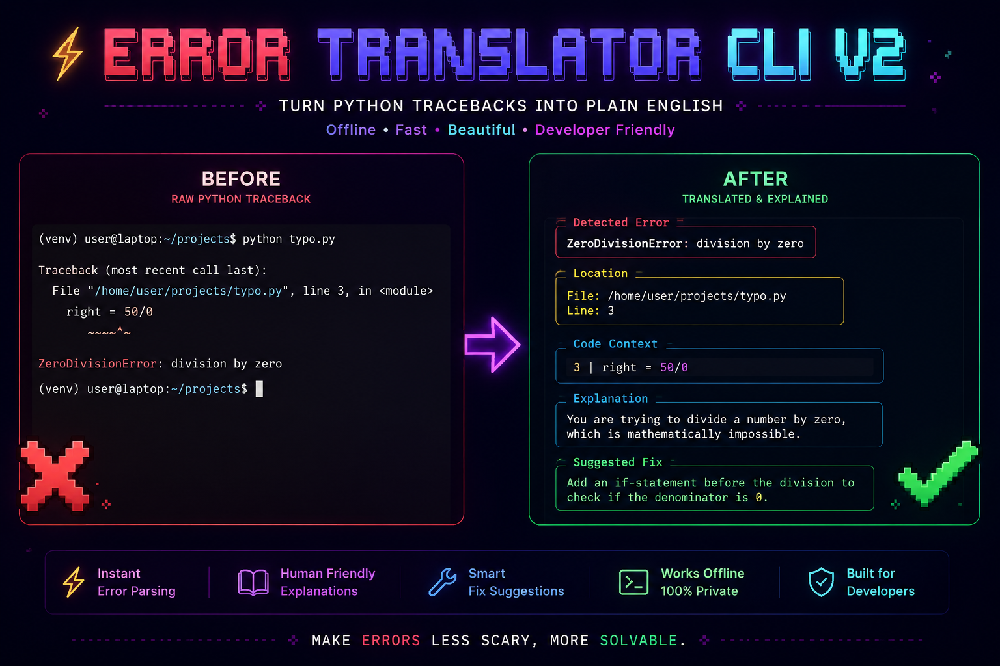

Error Translator CLI v2¶

⚡ Fatal to Fabulous: Turn cryptic Python exceptions into clear advice and actionable fixes. ⚡
100% Offline • Sub-millisecond Performance • AST Scoped Analysis • Multi-Surface Integration


What is Error Translator?¶
Error Translator is a local-first Python traceback analyzer and exception explainer. It parses raw Python stack traces, retrieves the exact offending line of source code, inspects surrounding Abstract Syntax Tree (AST) lexical scopes for typo detection, and converts cryptic errors into crystal-clear explanations paired with concrete, actionable fixes.
Designed for developers, learners, educators, and automated CI pipelines, it operates entirely offline with zero telemetry and sub-millisecond execution speeds.
❌ RAW PYTHON EXCEPTION:
Traceback (most recent call last):
File "calculator.py", line 12, in <module>
result = "Total items: " + count
TypeError: can only concatenate str (not "int") to str
✨ ERROR TRANSLATOR DIAGNOSTIC:
┌─ Detected Error ─────────────────────────────────────────────────────────────┐
│ TypeError: can only concatenate str (not "int") to str │
├─ Location ───────────────────────────────────────────────────────────────────┤
│ File: calculator.py | Line: 12 │
├─ Code Context ───────────────────────────────────────────────────────────────┤
│ 12 │ result = "Total items: " + count │
├─ Explanation ────────────────────────────────────────────────────────────────┤
│ You are trying to add a string to an int, which Python cannot do. │
├─ Suggested Fix ──────────────────────────────────────────────────────────────┤
│ Convert the int to a string first using str() before concatenating. │
└──────────────────────────────────────────────────────────────────────────────┘
Core Pillars & Design Principles¶
Zero Network Latency & Total Privacy.
Your source code, file paths, variable names, and crash logs never leave your workstation. All regex evaluations and AST traversals run strictly on your local CPU without making external API or LLM calls.
Dual-Engine Architecture.
Powered by a compiled C extension (fast_matcher.c) that accelerates pattern matching across pre-compiled regex tables. On systems without a C compiler, it automatically and transparently falls back to a pure-Python matching loop with zero difference in output.
Context-Aware Diagnostics.
When a NameError, AttributeError, or ImportError occurs, the engine parses the Python file into an Abstract Syntax Tree (AST). By analyzing lineno and end_lineno boundaries, it searches for similar identifiers strictly within the visible scope—offering precise "Did you mean?" suggestions.
Five Ways to Debug.
Use Error Translator anywhere in your development lifecycle:
- Command-Line Tool (
explain-error) for running scripts, analyzing logs, or starting interactive REPL sessions. - Automatic Hook (
error_translator.auto) for global exception interception viasys.excepthook. - Jupyter Notebook Extension (
%load_ext error_translator.jupyter) for in-cell Markdown explanations. - Programmatic Python API (
translate_error) for custom loggers, bots, and test fixtures. - FastAPI Microservice (
error_translator.api.server) for distributed log pipelines and browser-based dashboards.
Quickstart¶
Installation¶
Error Translator requires Python 3.9 or newer.
Usage Modes¶
Run any Python script directly. If it fails, the error output is intercepted and translated:
Paste error text directly as CLI arguments:
Add one import at the top of your script for automatic crash translation:
Explore the Documentation¶
-
:material-layers-triple: Features & Integrations
Detailed reference guides for CLI execution, REPL mode, Jupyter notebooks, FastAPI REST endpoints, and the programmatic Python API.
-
:material-cogs: Architecture & Internals
In-depth architectural overview, mermaid pipeline flowcharts, C-extension design, AST scoping mechanics, and schema contracts.
-
:material-book-open-page-variant: Real-World Examples
Curated catalog of raw tracebacks alongside translated output panels across all 26+ Python exception classes.
-
:material-source-pull: Contributing Guide
Contribution standards, local setup with
pytest, adding regex patterns torules.json, and using the AI-Powered Rule Builder.
Community & Support¶
- Repository: GitHub (gourabanandad/error-translator-cli-v2)
- PyPI Package: error-translator-cli-v2
- Bug Reports & Issues: GitHub Issues
- License: MIT License